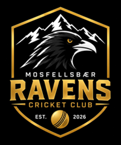

Scores by CricHeroesÚrslit frá CricHeroes
FixturesLeikirStandingsStöðutöflurStatisticsTölfræðiScorecards ↗Skorkort ↗
Cricket at 64° NorthKrikket á 64. breiddargráðu
A stronger, more inclusive Iceland through sport. Come and play, watch or support.Sterkara Ísland fyrir alla, í gegnum íþróttir. Komdu að spila, horfa eða styðja.
Start playingByrjaðu að spila Fixtures & resultsLeikir og úrslitBecome a partner →Gerast samstarfsaðili →
Latest newsNýjustu fréttir
The latest from Icelandic cricket.Það nýjasta úr íslensku krikketi.
Iceland v Marylebone Cricket ClubÍsland gegn Marylebone Cricket Club
Reykjavík, 14–16 August 2026: a T20, a 100-over declaration match and a 40-over game.Reykjavík, 14.–16. ágúst 2026: T20-leikur, 100 yfira leikur og 40 yfira leikur.
Cricket camp for kidsKrikketbúðir fyrir börn
Ages 7–15, boys and girls. Saturdays 9:00–11:00 at Fellaskóli, from September 2026. No experience needed, equipment provided.7–15 ára, strákar og stelpur. Laugardaga kl. 9:00–11:00 í Fellaskóla, frá september 2026. Engin reynsla nauðsynleg, búnaður á staðnum.

Welcome, Mosfellsbær RavensVelkomin, Mosfellsbær Ravens
Iceland's newest cricket club (est. 2026) joins the domestic competitions.Nýjasta krikketfélag landsins (stofnað 2026) bætist í innlendu keppnirnar.
Upcoming tournaments & eventsNæstu mót og viðburðir
What's coming up, from training to trophies.Það sem er framundan, frá æfingum til titla.
Every Saturday from September 2026 · FellaskóliAlla laugardaga frá september 2026 · Fellaskóli
Indoor competitionInnanhússmót
Six-a-side around midsummerSex í liði um sumarsólstöður
League fixtures published on CricHeroesLeikjadagskrá birt á CricHeroes
National team spotlightLandsliðið í sviðsljósinu
Iceland v Marylebone Cricket Club, Reykjavík, 14–16 August 2026.Ísland gegn Marylebone Cricket Club, Reykjavík, 14.–16. ágúst 2026.
A T20, a 100-over declaration match and a 40-over game against one of cricket's most famous clubs.T20-leikur, 100 yfira leikur og 40 yfira leikur gegn einu þekktasta krikketfélagi heims.
Meet the squad →Kynntu þér hópinn →Try cricket in IcelandPrófaðu krikket á Íslandi
Never played before? Tell us where you live and we will help you find a club and a first session.Aldrei spilað áður? Segðu okkur hvar þú býrð og við hjálpum þér að finna félag og fyrstu æfingu.
How to startHvernig byrja ég?Join a clubGakktu í félag
Six clubs across the capital area. Pick the one nearest you.Sex félög á höfuðborgarsvæðinu. Veldu það sem er næst þér.
Latest photos & videosNýjustu myndir og myndbönd
Click a photo to enlarge.Smelltu á mynd til að stækka.
All galleries & videos →Öll myndasöfn og myndbönd →Partners & supportersSamstarfsaðilar og stuðningsaðilar
Thank you to everyone who makes cricket in Iceland possible.Takk til allra sem gera krikket á Íslandi mögulegt.
Become a sponsorGerast styrktaraðili Support usStyrktu okkur